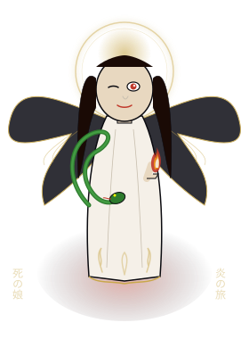

Rebirth, a daughter of Death, must master a power that threatens the world she wants to protect.
A decade of character experiments, fan communities, interactive storytelling and independent world-building informs a new serialized-fiction experiment from IBLoud and Loptr Lab.
Pre-publication development / audience testing proposed
An editorial proposition rooted in the creator’s publishing history. The proposed series has not launched on Wattpad.
The Diary of
Death’s Daughter

Rebirth · Existing manga cover illustration Selected from the creator-held development artifact.The proposed serial · Origin volume
01 / The proposed series
The Diary of Death’s Daughter
She has the power to remake the world. First, she must learn to leave it room to live.
Rebirth is a daughter of Death. Her overwhelming power threatens the fragile world she wants to protect. Under her father’s guidance, she must learn agency, restraint and leadership—and decide whether she can seek knowledge on her own terms.
The question at the center of the story: can someone created within an established order determine her own place in it?
Genre: mythic fantasy / speculative drama. Proposed form: serialized prose in Rebirth’s first-person diary voice, developed from the existing manga and curriculum.
02 / A voice before a world
Power, from the inside.
The diary offers a close view of what Rebirth notices, misunderstands and learns. These short excerpts already exist in The Daughter’s Curriculum; their selection here proposes a prose direction, not a newly published chapter.
“How do you apologize to a piece of carved obsidian? You don't. You just learn to stay further away from the things you love.”
Rebirth · Entry 2, “On the Weight of the Aura” Existing development excerpt
“I used to think Death was the end. Now I realize he’s the only thing keeping the beginning from burning up.”
Rebirth · Entry 4, “On the Father's Shadow” Existing development excerpt
03 / The existing origin
Five chapters. One direct question.
The manga’s five-chapter origin stays intact. Prose adaptation and chapter length remain editorial decisions; the diary excerpts are not presented as a one-to-one replacement for these chapters.
Chapter 01
Satan's Fury
Heaven’s prohibition on angelic procreation is broken; Satan seethes.
Chapter 02
The Serpent of Old
The serpent enters Eden to sever the divine bond between Adam and Eve.
Chapter 03
Death's Daughter is Born
Death forms his daughter from a fragrant nest of cinnamon, frankincense and ancient fire.
Chapter 04
The Flaming Sword
Cherubim and a turning sword guard the way to the Tree of Life.
Chapter 05
The Journey of the Flame
Rebirth approaches the flame to ask God a question directly—to walk the path this telling imagines Eve feared.
The five lessons of The Daughter’s Curriculum
A separate five-lesson structure explores leadership through consequence. It informs the character’s education, without rewriting the origin chapters or certifying current game rules.
Ride the Horse (The Knight): see the path that requires a sideways step.
Beware the Bishop (The Doctrine): recognize the harm power can do to those who follow you.
Take the Castle (The Golem): learn when to delegate force.
Knight the Pawns (The Sacrifice): face loss and the cost of leadership.
Rival the Queen (The Mirror): meet equal power with restraint.
These are narrative-development lessons. Veiled Dominion’s own sources govern accepted mechanics and implementation.
04 / The reader experiment
Testing the Story Before Building the World
Wattpad is being evaluated as a place to discover readers and test a serial. Before expanding the world, we want to understand whether people care about Rebirth, follow her choices and want to return.
What we want to learn
Does Rebirth attract readers, and do they continue between chapters?
Does the diary format make her choices and emotions clearer?
Which themes prompt meaningful discussion?
Where do clarity, characterization or pacing lose the reader?
Is there voluntary interest in related stories or interactive experiences?
Can feedback guide revision while creative authority stays with the author?
What would count as evidence
Once chapters are published, record actual reads, votes, comments and feedback about clarity, characters and pacing. Record return behavior only where the platform makes it measurable; chapter totals alone do not identify returning readers.
Early interest is a signal to investigate. Engagement means readers spend time, return or discuss. Commercial demand needs separate evidence of willingness to pay—none is established here.
No experiment results yet. No readership target, conversion rate or revenue is presented as achieved. No tracking or signup system is added to this page.
Before launch, agree the release cadence, observation window and review questions. Readers may comment on Wattpad when chapters exist; participation and interest in other projects stay voluntary. Feedback informs revision, not a transfer of authorship, rights or canon authority.
05 / The creator & studio
A practice built by making stories.
I.B. Loud / Dominique Devereaux writes across fan communities, original fiction and interactive story experiments. Fan fiction offered a place to test voice, character and consequence; independent world-building carries that practice forward.
Loptr Lab connects creative production, accessible games, training and research. Its projects retain their own purposes, sources and rights. The studio’s people-over-profit mission places creative practice and accessibility before expansion for its own sake.
Agency, power and consequence recur across the work. A shared theme is not a fictional crossover, a shared runtime or permission to merge projects’ canon.
The Diary of Death’s Daughter
The mythic origin and proposed first-person Wattpad serial. Pre-publication development.
The separate Rebirth, Death’s Daughter film treatment is a standalone reimagining. It is not an accepted sequel to the manga or a new chapter of this proposed serial.
07 / Evidence & development
From the Archive
Wattpad · Historical publishing
The November 9, 2026 observations above establish the supplied account-history baseline. The author profile is the only Wattpad destination linked here; individual story titles and permalinks await verification.
Lady Violet and Sebastian
The canonical timeline identifies an ancestral story about duty, freedom and consequence. Primary source inventory and dates remain pending.
The RIM / Urban Alien Adventures
The documented creative lineage describes a distributed method of discovery across fragments and media. Archive consolidation remains incomplete.
IVXX Story Lab
An existing narrative archive and development surface. Its portfolio entry links to the owning public repository.
Death’s Daughter / Rebirth
Historical public posts confirm use of the Diary of Death’s Daughter title by March 13, 2025, before the retrieved 2026 manga, curriculum and continuity-map file dates. Those later source documents establish the structures used for this proposed serial; neither social timestamps nor Drive metadata alone establish first authorship or rights clearance. Read the linked historical posts.
Later original stories and games
Violet’s Revenge and Veiled Dominion carry distinct story and design work forward. Their own repositories retain authority.
Historical catalog examples supplied for verification
The Legend of Lady Violet and Sebastian; Violet's Revenge; The RIM Experience; Death is Only the Beginning; My Name is Luna; The Beast; SoulCaliber: The Birth of the Leo Blade; In Penny We Trust.
These titles are transcribed from the brief. They are not individually verified story links, and inclusion does not classify every work as original, licensed or commercially reusable.
The creator’s account of the return to independent work
Dominique states that Lady Violet predates the later Ren-inspired adaptation; a Ren song prompted a recollection and adaptation of the character, proposed for collaborative consideration. Dominique subsequently returned to independent character and original-IP development.
This is the creator’s account, pending primary historical corroboration. It does not establish another person’s private statements or motives. No approval, participation, endorsement or license from Ren is claimed; his work and IBLoud’s work remain distinct intellectual property.
Historical posts · Source-verified
On November 9, 2026, the separate Made-Sick/PIXIE source-review test searched ibloud.xyz public repository records, examining 27,490 records spanning November 13, 2023–November 6, 2026. It found 31 posts matching the normalized full Diary of Death’s Daughter title, and 107 original-text matches across the tested story phrases. These counts describe the reviewed public collection, not Wattpad readership or independent proof of story ownership.
These are the author account’s public records, returned through a Bluesky public repository relay and linked to the original posts. The search tool was verified through a local HTTP MCP interface; direct PDS access and installed PIXIE plugin activation remain unverified. The posts document publication of the quoted words, not the truth of any underlying rights or collaboration claim.
This is a selected evidence sample, not an exhaustive history of the creator’s work. Both retrieval records are on an unmerged review branch.
08 / Before you turn the page
Reader & development questions
Can I read the proposed series on Wattpad now?
No launch is claimed. Explore the existing IBLoud author profile or the proposed-series section on this page. No new chapters have been published by this work.
Do I need to know the other projects first?
No. The proposed serial should introduce Rebirth, her relationship with Death and the stakes of her power on its own. The reading map is optional context.
Is this fan fiction or original fiction?
This is a proposed original mythic-fantasy development. The historical catalog includes transformative work as well as claimed original material. Third-party characters, music, art and other protected expression do not transfer into the serial with the creator’s experience.
Does the curriculum define the game’s current rules?
It is a narrative-development source, not a certification of implemented mechanics. Veiled Dominion’s owning repository governs its rules, licenses and canon.
How can a reader help?
For now, review the premise, voice and page clarity. Leave public pitch feedback through the existing GitHub workflow if you choose; posting requires a GitHub account. Keep private material out of public issues. Wattpad chapter comments become relevant only if chapters are later published.
09 / Authorship & stewardship
Keep the source. Keep the choice.
The studio’s stated objective is to preserve authorship, credit, editorial independence and appropriate succession planning for future heirs. No legally executed succession plan or completed rights clearance is claimed.
The canonical matrix distinguishes claimed original works, transformative fan archives and structural inspiration. Adaptations remain proposals unless accepted through the owning project’s canon process. Unverified collaboration history is not a license; third-party music, recordings, likenesses and artwork require item-specific review before reuse.
The selected artwork and diary excerpts come from the creator-held development sources requested for this review. Their inclusion does not replace contributor attribution or chain-of-title review. A copyright notice alone does not establish ownership, and a collaboration proposal does not grant adaptation rights.
AI assisted the editorial copy and page implementation. The source chapter structure and quoted diary passages were preserved; new pitch phrasing is proposed for Dominique’s review. The full owner-only Drive documents, private correspondence and agreements are not republished or embedded.